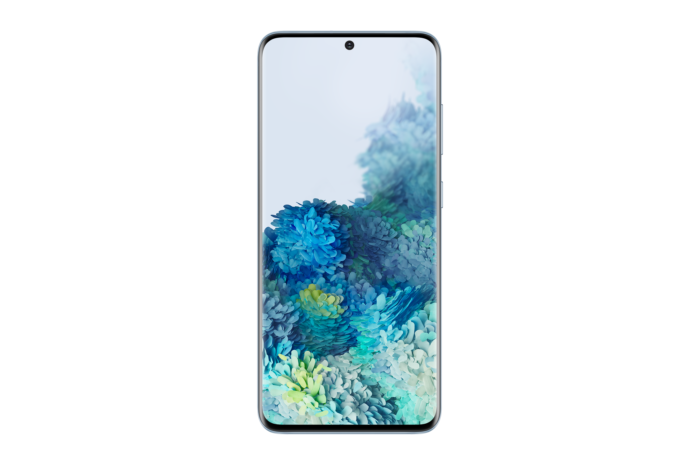

Caractéristiques techniques : Système :Android 10 Interface utilisateur :One UI 2.0 Processeur :Samsung Exynos 990 Nombre de coeurs :8 Fréquence processeur :2.73 GHz Puce graphique :ARM Mali G77 Support cartes mémoire :Oui Type de cartes supportées :microSD, microSDHC, microSDXC Mémoire vive (RAM) :12 Go Capacité :128 Go Indice DAS :0.279 W/kg Indice de protection (étanchéité) :IP 68 Double SIM :Oui Affichage : Taille (diagonale) :6.2 " Technologie de l'écran :Dynamic AMOLED Définition de l'écran :3200 x 1440 px Résolution de l'écran :563 ppp Fréquence de rafraîchissement :120 Hz Entrées & sorties Support du Wi-Fi :Oui Norme Wi-Fi :Wi-Fi 802.11 n/ac, Wi-Fi 802.11b, Wi-Fi 802.11g, Wi-Fi 6 Support du Bluetooth :Oui Version Bluetooth :Bluetooth 5.0 Support du NFC :Oui Support de l'infra-rouge (IrDA) :Non Type de connecteur USB :USB Type-C Compatibilité USB Host :Oui Prise jack :Non Multimédia : Capteur photo principal :12 Mpx Deuxième capteur photo :64 Mpx Troisième capteur photo :12 Mpx Capteur ToF :Non Flash :Oui Enregistrement vidéo (principal) :7680 x 4320 px Capteur en façade :Oui Définition vidéo du capteur en façade :3840 x 2160 px Capteur photo frontal 1 :10 Mpx Radio FM :Oui Communication : Bandes GSM :850 MHz, 900 MHz, 1800 MHz, 1900 MHz Mhz Débit max. en réception 3G :42 Mbit/s Compatible réseau 4G (LTE) :Oui Compatible réseau 5G :Oui Alimentation : Batterie amovible :Non Capacité de la batterie :4000 mAh Recharge sans-fil :Oui Dimensions : Largeur :6.91 cm Hauteur :15.17 cm Epaisseur :0.79 cm Volume (cm3) :82.81 cm3 Poids :163 g
